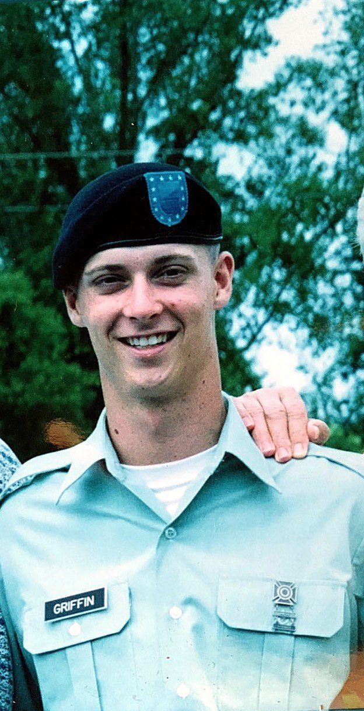
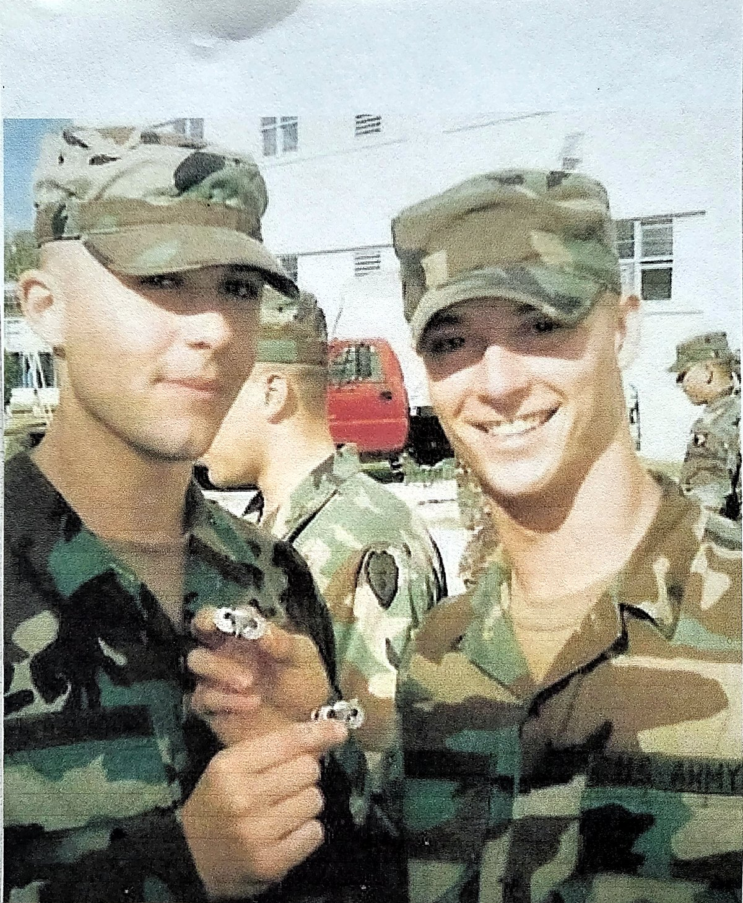
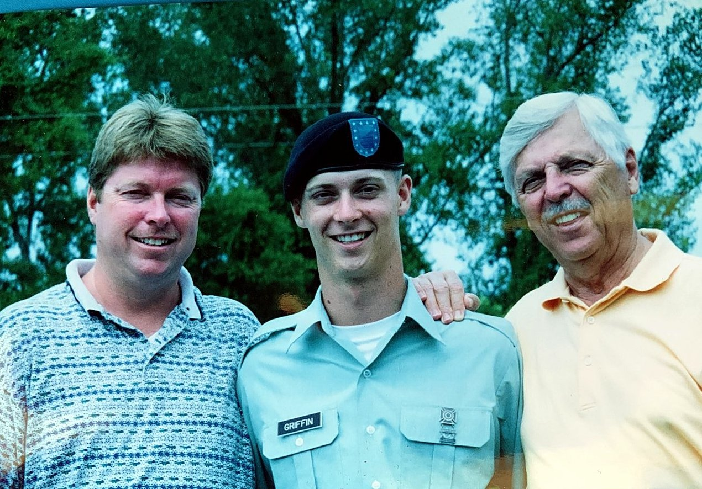
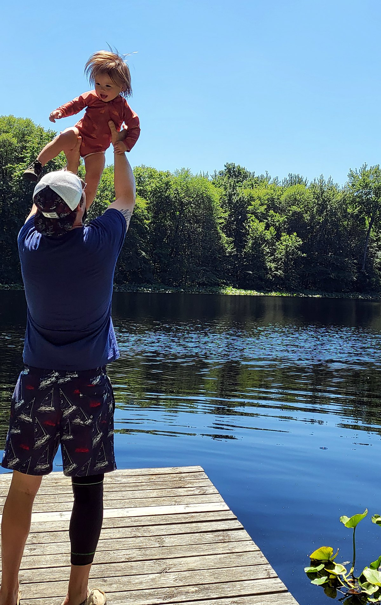
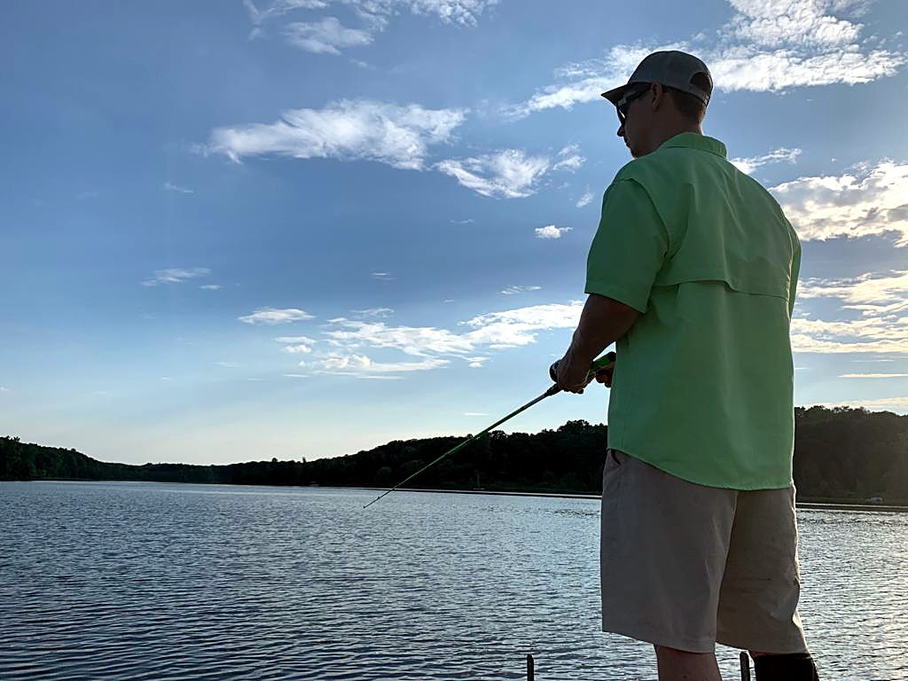

My story
Executives like to talk about pressure. I measure it differently. This is the part of the record that never fits on a résumé — the 75th Ranger Regiment, a parachute that didn't open, and the thirty seconds that have governed every decision I've made since. Two companies built and sold, a NASDAQ acquisition, a region that now leads a national platform — all of it traces back to a standard set at Fort Benning.
Seven chapters 2005 — today No embellishment required

I was selected for the 75th Ranger Regiment — one of the most elite special operations units the United States military fields. People imagine that path as a highlight reel. It isn't. The path to a Ranger unit is not designed to build you up; it is designed to find the exact point where you break, and then ask you — plainly, repeatedly — whether you intend to continue. Most men answer no. Nobody blames them.
The demands were mental as much as physical. Sleep deprivation. Extreme weather. The constant pressure to perform at your peak when everything in your body is filing objections. In the beginning I questioned the sanity of what I was doing — whether I was strong enough, whether I would even make it out alive. Some days I was battling myself more than the elements or any enemy. But every step forward built something no schoolhouse issues: the hardened knowledge that I could persevere through any obstacle put in front of me.
The training isn't designed to build you up. It's designed to find where you break — and ask whether you intend to continue.
What the Regiment actually equips you with isn't gear. It's a code: integrity, honor, and a sense of duty that places the mission above your own security — because the mission is usually a matter of life and death, and trust between Rangers has to be absolute. Rangers move first and hold the standard because someone has to. I have carried that into every room I've entered since.
· Rangers lead the way· Sua Sponte


A jump is a procedure. You rehearse it until it is boring, because boring is what keeps planeloads of men alive. Hundreds of jumps run exactly as drawn. Then one doesn't. I exited the aircraft the way I had been trained to — and my parachute did not open.
What I had was less than thirty seconds. Thirty seconds to mentally review every hour of training, diagnose the best available option under a failing canopy, and act — while the ground did the only thing the ground ever does. There was no committee. No second opinion. No more data coming. There was a decision, and there was the execution of that decision, and the space between the two was where my life sat.
I made the call, and the call is why I'm alive. It is not why I'm whole. The impact broke things that training couldn't fix and doctors couldn't fully give back. The recovery was long, and it ended with the paperwork no soldier wants to read his own name on: an honorable medical discharge. In 2007 I took the uniform off for the last time — in my twenties, carrying injuries I hadn't planned for and the highest standard I'd ever been held to, with nowhere left to apply it.
A parachute accident ended my military career. It didn't end the standard it set.
People ask what I learned in the military and expect a slogan. Here is what I actually learned: when the canopy fails, you don't get to negotiate with the situation. You get your training, your judgment, and thirty seconds. Every business decision I've made since has been easier than that — and I've made every one of them like it mattered as much.
There is no field on a civilian résumé for "held to the Ranger standard." The market didn't owe me anything for it, and I didn't ask. I started where revenue actually starts: on the floor. At CDW, as an account manager, I learned that every dollar on an income statement began as one person keeping a promise to another — a call made, a follow-up honored, a problem owned all the way to resolution.
Then Toshiba — outside sales rep, Hawaii. Paradise, if you've never carried a quota through it. I worked the territory the way I'd been taught to work an operation: plan, execute, debrief, adjust, repeat. Eighteen months later I was the sales manager. Not because anyone handed it over — because the numbers kept making the argument for me.
Those years are why no dashboard has ever been able to lie to me. I know what the frontline knows, because I have been the frontline. Every forecast I've signed since, I've signed as someone who has personally made the cold call behind the number.
In 2011 I founded Optimized, and for a long stretch the entire company was me. By day I was the whole sales team: the cold calls, the pipeline, the proposals, the contracts. By night I was the whole delivery team: the SEO, the PPC, the social campaigns, the web development. Every deliverable a client paid for passed through my hands — because there were no other hands.
It never took a dollar of outside money. It didn't need one. Optimized bootstrapped its way to 23 employees, $5M in revenue, and seven satellite offices across the continental U.S. — outranking the very agencies who claimed the same expertise, in their own search results. Alongside it I built Florida Landscaping Services to $3M and eight employees. Both companies sold. Every role I hire for today, I have personally done — which means nobody who works for me carries a job I don't understand.
By day I was the entire sales team. By night, the entire delivery team. There were no other hands.
And in 2018, while running companies, I took on a different kind of build: a U.S. congressional campaign, constructed from zero — the organization, the field operation, the communications, all of it stood up from nothing — culminating in a live debate on statewide PBS, unscripted, under the lights. Set aside everything else a campaign is: as a test of leadership and communication under maximum public pressure, there is nothing else like it in civilian life.
The operator years came next — the ones a résumé lists cleanly and the work never was. At Wensco I owned every outcome, and the records for sales, revenue, and growth fell one after another. At Roofing GR, the lead engine I built grew qualified volume 1,000% year over year — not a typo, a system.
Then AcreValue, the one that proved the system travels. I came in fractional: a platform with 1.5 million users and recurring revenue that had declined two straight years. I rebuilt the go-to-market from the inside sales calls out, repositioned the product, returned MRR to growth — and set the table for the ending: acquisition by CoStar Group, a NASDAQ company. A turnaround that ends on a stock ticker doesn't need adjectives.
Atrium handed me a $25M budget across six brands, and it was deployed like a budget that size should be — with discipline, attribution, and zero sentiment. Vertex made me Chief Marketing Officer, and within four months inbound calls were up 490% and the booking rate had gone from 16% to 59%. Today I run Midwest marketing for Infinity Home Services — and the region leads the entire company: double-digit growth and tens of millions in new sales, year over year.
There was one item left open on the ledger, and it had been open for twenty years. I left for the Army before the bachelor's degree was done, and life kept not requiring it — the companies didn't ask, the campaigns didn't ask, the C-suites didn't ask. But the standard doesn't accept "not required."
So I went back. Central Michigan University — while simultaneously running a $25M growth engine at work. I finished summa cum laude, with a 3.97, twenty years after the first credit was earned. Not because my career needed the credential. I did it to be a good example to my children — that you can do it, and it doesn't have to happen in any specific order of life. And then, because a standard doesn't know how to stop, I enrolled again: a dual MBA and M.S. in Information Systems at Auburn University, on schedule for 2027.
Twenty years later: summa cum laude, 3.97 — earned nights and weekends, next to a $25M P&L.
People ask what a Ranger tab has to do with marketing. Everything. The plan. The rehearsal. The brutal honesty about what the data actually says. The refusal to leave a mission half-finished — even one that waits twenty years for you to come back to it. Discipline isn't a slide in my deck. It's the operating system.
Everything above is what I do. It is not the whole of what I am. Before any title on this page, I'm a husband and a father — a family man building a life in Michigan, which is what all the other chapters were for.
When the calendar allows, we're outside — Michigan lakes and long days on the water with my family. Time outdoors keeps honest books: the water doesn't care what you ran last quarter, and neither do the people who matter most.
And I'm a Christian. I don't lead meetings with it, and I won't hide it either. The standards named throughout this story — integrity, service, stewardship — didn't come out of a leadership book. They come from somewhere deeper, and they don't clock out when I do.
One standard — at home, in the field, and in the boardroom.


Every chapter above, laid end to end. No gaps, no gloss — the same standard, applied to whatever the year demanded.
Airborne Ranger, Fort Benning. A parachute malfunction, a thirty-second decision, and an honorable medical discharge that ended the career — not the standard.
CDW account manager, then Toshiba outside sales in Hawaii — promoted to sales manager in eighteen months. Revenue, learned one conversation at a time.
Optimized: a team of one, bootstrapped to 23 employees, $5M, and seven satellite offices. Florida Landscaping Services: $3M, eight employees. Both companies sold.
Built a full campaign organization from zero — raising funds, growing a following, and debating live on statewide PBS. A leadership-and-communications chapter run on honor and integrity.
Wensco → Roofing GR (1,000% lead growth) → AcreValue, fractional, through its CoStar/NASDAQ acquisition → Atrium ($25M, six brands) → Vertex, CMO (+490% inbound calls, booking rate 16%→59%).
The degree finished twenty years after it started — summa cum laude, 3.97 — earned while running a $25M growth engine.
The Midwest region leads the company: #1 in the company, with tens of millions in new YoY sales.
Dual master's in progress at the Harbert College of Business. The standard doesn't know how to stop.
The standard that survived a failed canopy is the same one I'll bring to your P&L. If your company has a mission worth that kind of discipline — tell me about it.
Start a conversation →